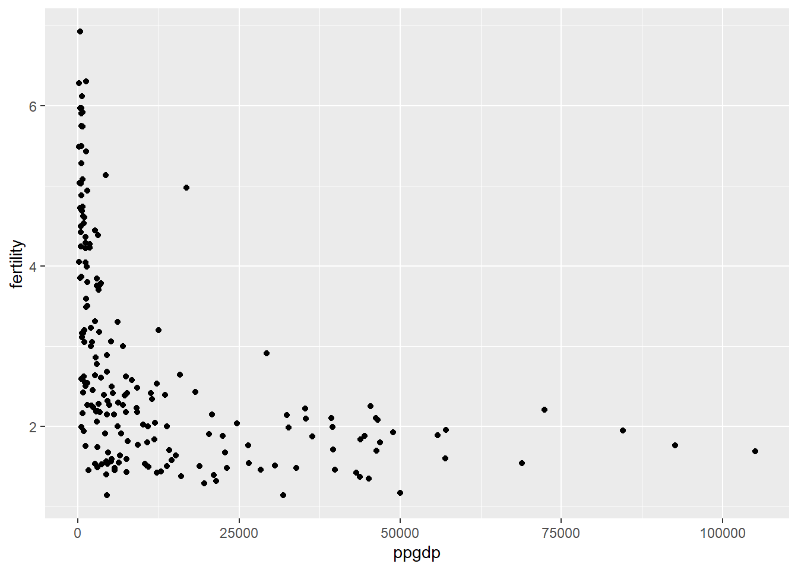
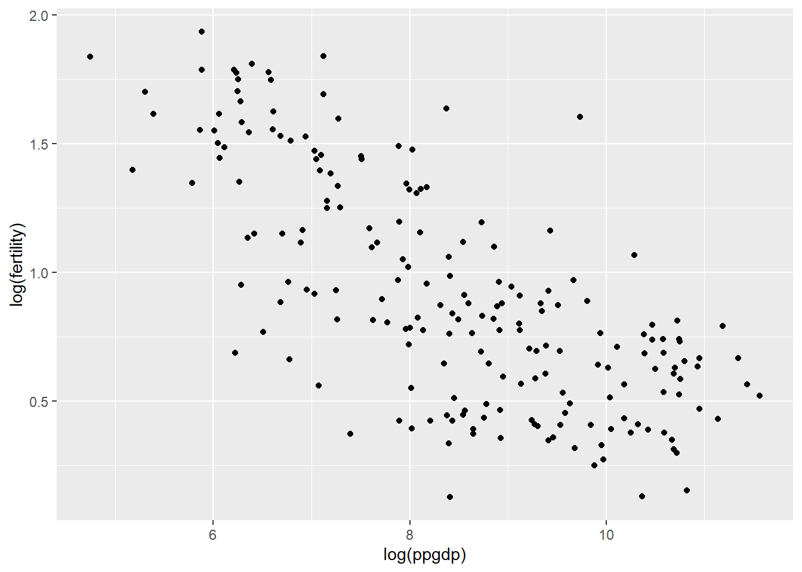

Loading required package: car
Loading required package: carData
Attaching package: 'car'
The following object is masked from 'package:dplyr':
recode
The following object is masked from 'package:purrr':
some
Loading required package: effects
lattice theme set by effectsTheme()
See ?effectsTheme for details.
Code
library(smss)
Warning: package 'smss' was built under R version 4.2.2
Code
library(dplyr)library(ggplot2)library(GGally)
Error in library(GGally): there is no package called 'GGally'
Question 1
Code
data <- UN11ggplot(data, aes(x = ppgdp, y = fertility)) +geom_point()

Code
ggplot(data, aes(x =log(ppgdp), y =log(fertility))) +geom_point()

#Question 1.1 The predictor is ppgdp and the response is fertility.
#Question 1.2 A straight-line mean function does not seem to be plausible for this graph.
#Question 1.3 A simple linear regression model does seem plausible for a summary of the log log graph.
Error in eval(expr, envir, enclos): object 'stud' not found
Code
model3 <-lm(piNum~reNum, stud)
Error in is.data.frame(data): object 'stud' not found
Code
summary(model3)
Error in summary(model3): object 'model3' not found
Code
model4 <-lm(hi~tv, stud)
Error in is.data.frame(data): object 'stud' not found
Code
summary(model4)
Error in summary(model4): object 'model4' not found
Code
ggplot(stud, aes(x = reNum, y = piNum)) +geom_jitter()
Error in ggplot(stud, aes(x = reNum, y = piNum)): object 'stud' not found
Code
ggplot(stud, aes(x = tv, y = hi)) +geom_jitter()
Error in ggplot(stud, aes(x = tv, y = hi)): object 'stud' not found
It seems like the results are that political ideology tends to be more right-leaning as religiosity increases. As hours of tv watching tends to go down, high school GPA tends to go up. These relationships are both statistically significant.
Source Code
---title: "Homework 3"author: "Donny Snyder"desription: "Homework 3 Submission"date: "10/17/2022"format: html: toc: true code-fold: true code-copy: true code-tools: truecategories: - hw3 - regression---```{r}library(tidyverse)library(alr4)library(smss)library(dplyr)library(ggplot2)library(GGally)```# Question 1```{r, echo=T}data <- UN11ggplot(data, aes(x = ppgdp, y = fertility)) +geom_point()ggplot(data, aes(x =log(ppgdp), y =log(fertility))) +geom_point()```#Question 1.1The predictor is ppgdp and the response is fertility.#Question 1.2A straight-line mean function does not seem to be plausible for this graph.#Question 1.3A simple linear regression model does seem plausible for a summary of the log log graph.```{r, echo=T}data$ppgdp2 <- data$ppgdp*0.75model1 <-lm(fertility ~ ppgdp, data)summary(model1)model2 <-lm(fertility ~ ppgdp2, data)summary(model2)cor(data$fertility, data$ppgdp)cor(data$fertility, data$ppgdp2)```# Question 2(a)The slope of the prediction equation will increase, as the units of the explanatory variable are decreased.# Question 2(b)The correlation will stay the same.# Question 3```{r, echo=T}watData <- waterpairs(watData)ggpairs(watData)```OPBPC, OPRC, and OPSLAKE all seem to be highly correlated with BSAAM.# Question 4```{r, echo=T}profData <- RateprofprofData <-data.frame(profData$quality, profData$helpfulness, profData$clarity, profData$easiness, profData$raterInterest)pairs(profData)```It seems as if quality, helpfulness and clarity are all highly interrelated. easiness and raterInterest are not as highly correlated.#Question 5```{r, echo=T}stud <-as.data.frame(student.survey)stud$piNum <-NAstud$reNum <-NAx =1while(x <=60){if(stud$pi[x] =="very liberal"){ stud$piNum[x] =-3 }if(stud$pi[x] =="liberal"){ stud$piNum[x] =-2 }if(stud$pi[x] =="slightly liberal"){ stud$piNum[x] =-1 }if(stud$pi[x] =="moderate"){ stud$piNum[x] =0 }if(stud$pi[x] =="very conservative"){ stud$piNum[x] =3 }if(stud$pi[x] =="conservative"){ stud$piNum[x] =2 }if(stud$pi[x] =="slightly liberal"){ stud$piNum[x] =1 }if(stud$re[x] =="never"){ stud$reNum[x] =0 }if(stud$re[x] =="occasionally"){ stud$reNum[x] =1 }if(stud$re[x] =="most weeks"){ stud$reNum[x] =2 }if(stud$re[x] =="every week"){ stud$reNum[x] =3 } x = x +1}model3 <-lm(piNum~reNum, stud)summary(model3)model4 <-lm(hi~tv, stud)summary(model4)ggplot(stud, aes(x = reNum, y = piNum)) +geom_jitter()ggplot(stud, aes(x = tv, y = hi)) +geom_jitter()```It seems like the results are that political ideology tends to be more right-leaning as religiosity increases. As hours of tv watching tends to go down, high school GPA tends to go up. These relationships are both statistically significant.